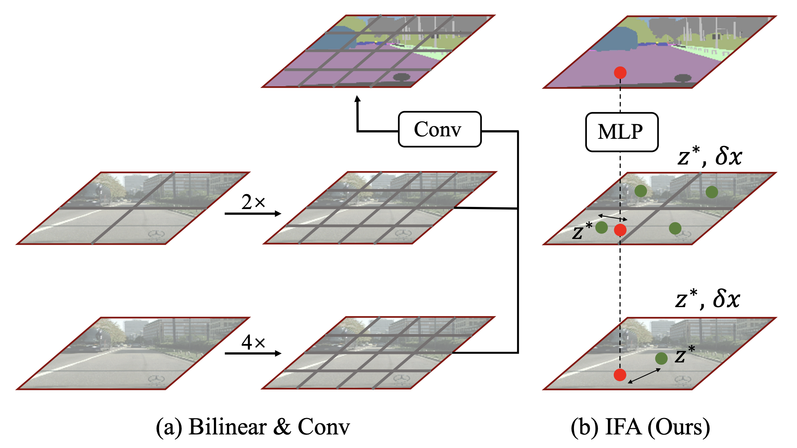
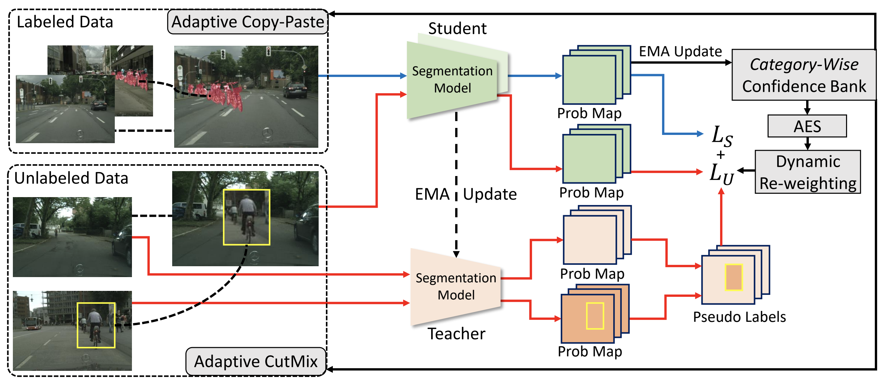
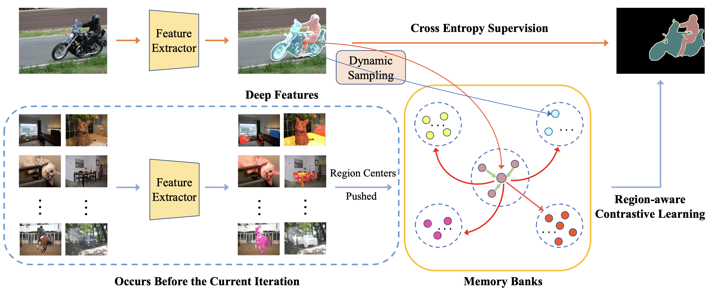
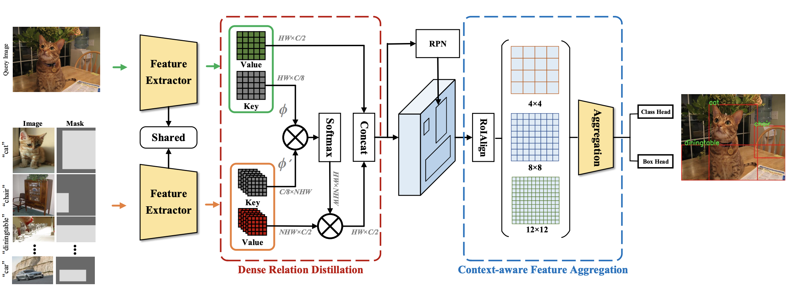
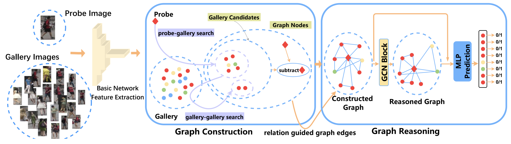
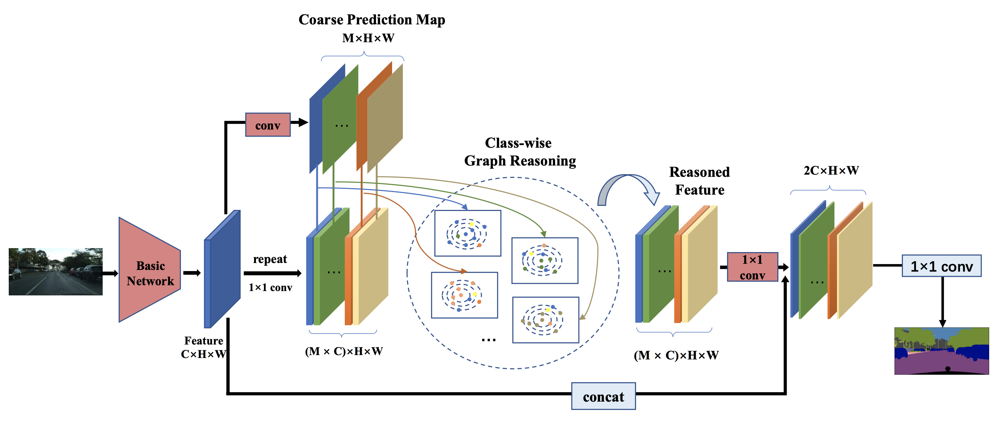
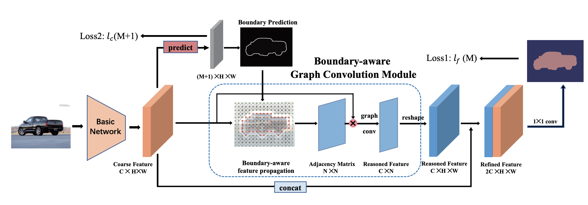
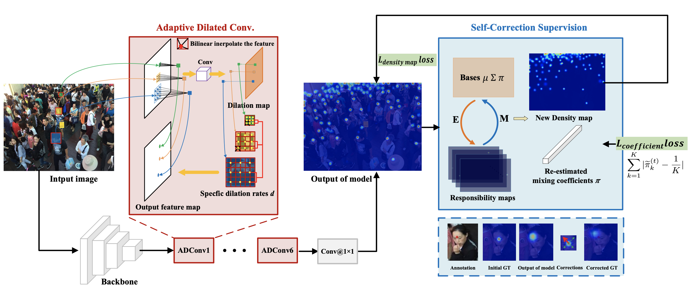

|
|
|
- (08/2022) I started my PhD at CMU SCS.
- (07/2022) One paper is accepted by ECCV2022!
- (06/2022) I graduated from Peking University!
- (11/2021) Two papers are submitted to CVPR2022.
- (09/2021) One paper is accepted by NeurIPS2021 as Spotlight!
- (07/2021) One paper is accepted by ICCV2021!
- (07/2021) I am selected as "Top 10 Outstanding Researcher" (学术十杰), EECS of Peking University!
- (05/2021) One paper is submitted to NeurIPS2021.
- (03/2021) One paper is accepted by CVPR2021!
- (12/2020) One paper is accepted by AAAI2021!
- (07/2020) One paper is accepted by ECCV2020!
- (06/2020) One paper is accepted by ICPR2020.
- (03/2020) One paper is accepted by CVPR2020!
- (09/2019) I began my graudate study in CS at PKU.
Publications (Full list can be found here.)
|  |
Learning Implicit Feature Alignment Function for Semantic Segmentation |
|
|  |
Semi-Supervised Semantic Segmentation via Adaptive Equalization Learning |
|
|  |
Region-aware Contrastive Learning for Semantic Segmentation |
|
|  |
Dense Relation Distillation with Context-aware Aggregation for Few-Shot Object Detection |
|
|  |
Context-aware Graph Convolution Network for Target Re-identification |
|
|  |
Class-wise Dynamic Graph Convolution for Semantic Segmentation |
|
|  |
Boundary-aware Graph Convolution for Semantic Segmentation |
|
|  |
Adaptive Dilated Network with Self-Correction Supervision for Counting |
Thesis
|
Label-Efficient Learning for Object Recognition |
-
Conference Reviewer
- Advances in Neural Information Processing Systems (NeurIPS)
- International Conference on Machine Learning (ICML)
- International Conference on Learning Representations (ICLR)
- IEEE Conference on Computer Vision and Pattern Recognition (CVPR)
- European Conference on Computer Vision (ECCV)
- International Conference on Computer Vision (ICCV)
- British Machine Vision Conference (BMVC)
- Winter Conference on Applications of Computer Vision (WACV)
-
Journal Reviewer
- IEEE Transactions on Pattern Analysis and Machine Intelligence (TPAMI)
- IEEE Transactions on Image Processing (TIP)
- Springer - International Journal of Computer Vision (IJCV)
- IEEE Transactions on Neural Networks and Learning Systems (TNNLS)
- IEEE Transactions on Circuits and Systems for Video Technology (TCSVT)
- Elsevier - Neurocomputing
- Award for Academic Innovation, Peking University, 2021
- Merit Student of Peking University, 2021
- Top 10 Outstanding Researcher (学术十杰), EECS, Peking University, 2021
- HUAWEI Scholarship (top 2%), 2021
- Scholarship for Outstanding Research, 2020
- Peking University Scholarship, 2019
- Xingquan Scholarship, Nanjing University, 2018
- Scholarship for Outstanding Student, Nanjing University, 2018
An INTJ. I love traveling and reading books.